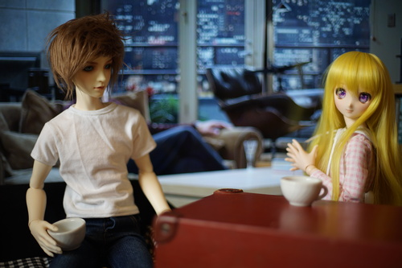
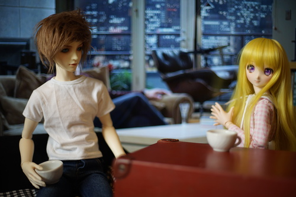

i beat the ps3 portion of nier replicant. i dont know if ill make it to the e ending. this game is just excruciating. i wrote a bit about it on my game reviews page. i think i want to try playing xenogears next.
did anyone see how much xenoblade 2 torna is worth?? thats nuts! im glad ryan bought it for me back when it was $30! i love that game. it was so fun and made xenoblade 2 even better

i bought a package of toilet paper and thought "i could do a photoshoot with this!!"
so i did.

check out the footage!!

i said "ryan this looks like a talk show!" and then he told me how to set up a talk show scene
 


he suggested kikipop get interviewed as well and i asked "what would kikipop say when she comes on the talk show!!!" and then he made fun of me. no fun at all!!!
the couch is made out of 6 rolls of toilet paper and 2 books with some fabric on top. my dollfie is sitting on top of 2 rolls as well. i set up the small tv behind them and, at ryans request, put an image of fraisers apartment behind them. it was really hard to get them all in the scene without showing the edges of the tv!